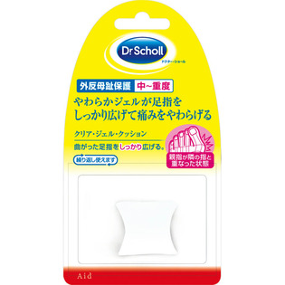

返回列表
产品名称：ドクター・ショール クリア・ジェル・クッション［トー・ストレーター］

レキットベンキーザー・ジャパン ドクター・ショール クリア・ジェル・クッション［トー・ストレーター］ ＿
メーカー レキットベンキーザー・ジャパン
JANコード 4986803015884
商品の特徴
外反母趾保護 中～重度
やわらかジェルが足指をしっかり広げて痛みをやわらげる
曲がった足指をしっかり広げる。
繰り返し使えます
親指が隣の指と重なった状態
成分・分量
記載無し
用法及び用量
＜使用方法＞
1．足をよく洗い、よく乾かしてから親指と第2指の間にはさんでご使用ください。
2．べたつきが気になる方はパウダーを本品に散布してお使いください。